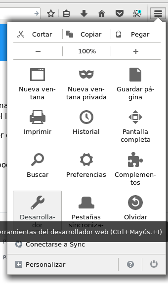

Javascript es un lenguaje del lado del cliente, por lo tanto se ejecuta en el navegador cuando cargamos una página web. Actualmente Javascript se ha expandido abarcando muchos más espacios y aplicaciones como NodeJS, nos permiten ejecutarlo en el lado del servidor.
Para poder iniciar el desarrollo con Javascript necesitamos un navegador como puede ser Firefox, un editor de texto (como pueden ser el bloc de notas, gedit,...) y mucha paciencia.
En el caso de usar Firefox para el desarrollo tendremos que usar las herramientas del desarrollador para poder depurar y encontrar errores en nuestras páginas.
Eligiremos "Consola web" y en la parte inferior del navegador se abrirá una ventana con las herramientas del desarrollador. La consola nos será útil para ver errores o mostrar mensajes de nuestro código. En el siguiente vídeo hay una descripción de las herramientas disponibles:
Otro elemento importante es el inspector que permite hacer clic sobre un elemento e inspeccionar sus propiedades:
Por último y no menos importante el depurador, que nos ayudará a encontrar fallos y errores en nuestro código Javascript.
Para practicar vamos a empezar con nuestro primer programa en Javascript, el programa "Hola mundo":
Como se puede ver el código Javascript se introduce entre las etiquetas <script></script>. En este caso le ordena que escriba en pantalla "Hola mundo" usando la función "document.write(texto)". Por ejemplo, para escribir "Adios mundo", se sustituiría por:
document.write('Adios mundo');
Hay otra forma de incluir el código dentro de las páginas y es ponerlo en otra archivo con la extensión ".js" e incluirlo dentro de nuestro código con:
<script scr='ruta al .js'></script>
Por ejemplo:
En el archivo "hola_mundo.js" tendremos:
¿Para qué puede servir esta segunda forma de incluir el Javascript en las páginas? Es útil para cuando se quiere insertar el mismo Javascript en varias páginas diferentes o bien cuando se va a introducir una cantidad elevada de código.
A veces nos interesará introducir comentarios en nuestro código. Estos comentarios son ignorados por el navegador, pero nos ayudarán mucho a entender el código o cómo se realiza una determinada tarea. Hay dos formas de introducir los comentarios:
La primera forma es usando //. Los comentarios con // comienzan donde se introduce // y acaban en el final de la línea.
// Este es un comentario
document.write('Hola mundo'); // Introduce 'Hola mundo' en la página
// La siguiente línea no se ejecutará pues está comentada:
// document.write('Adios mundo');
Otra forma de introducir los comentarios es usando /* y */. Los comentarios introducidos con /* acanban con */ y pueden extenderse varias líneas. Por ejemplo:
/*
Este es un comentario
que se extiende varias líneas.
*/
document.write('Hola mundo'); /*Introduce 'Hola mundo' en la página*/
/* La siguiente línea no se ejecutará pues está comentada:
document.write('Adios mundo');
*/
Como se ha visto en los ejemplos anteriores, se ponía un ; al final de cada orden que le dabamos al navegador:
// Este ejemplo escribe 'Hola mundo Adios mundo'
document.write('Hola mundo');
document.write('Adios mundo'); // Cada orden acaba por ;
Hay situaciones en las que si por error no se pone el ; al final de la instrucción o se coloca un ; en el lugar inadecuado, se obtendrán resultados inesperados.